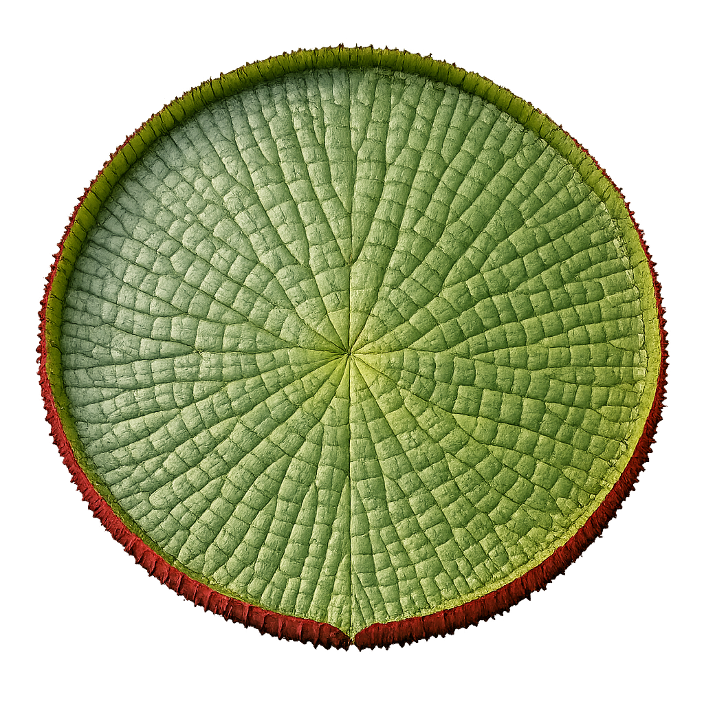

Origem garantida
Produtos com rastreabilidade e procedência diretamente da Amazônia.

Conectando a produção ao mercado
A Vitrine é parte do projeto Bússola do Peixe Amazônico, uma startup nascida na Amazônia com uma missão clara: encurtar o caminho entre quem produz e quem compra peixe amazônico de qualidade.
Produtores amazônicos enfrentam dificuldade para chegar até compradores fora da sua região. Compradores não sabem onde encontrar fornecedores confiáveis. A Vitrine existe para resolver esse problema de forma simples: um lugar onde quem produz aparece, e quem compra encontra.
Produtos com rastreabilidade e procedência diretamente da Amazônia.
Produtores e compradores se encontram sem intermediários desnecessários.
Fortalecemos cadeias produtivas locais e a economia amazônica sustentável.
Muitos produtores amazônicos vendem só para quem já conhecem, não por falta de produto, mas por falta de alcance. Na Vitrine, você tem um perfil público com seus produtos, sua região e seus contatos. Compradores de todo o Brasil podem te encontrar e entrar em contato diretamente.
A Bússola não fica no meio da negociação nem cobra comissão sobre nenhuma venda. O acordo é feito entre você e o comprador, do jeito que funciona melhor para os dois.
Seu nome, seus produtos e sua região visíveis para compradores de todo o Brasil.
O comprador fala direto com você. Sem formulários longos, sem intermediário.
A Bússola não cobra nada sobre suas vendas. O que você negocia, é seu.
Um perfil verificado passa mais confiança para quem está comprando pela primeira vez.
Na Vitrine você busca produtores por espécie, região ou volume disponível e entra em contato diretamente com quem produz. Sem taxas, sem intermediação, sem surpresas. A Bússola conecta as duas pontas e deixa a negociação acontecer entre vocês.
Filtre por tipo de peixe, localização e disponibilidade para encontrar o que precisa.
Todos os perfis passam por verificação antes de aparecer na plataforma.
Fale com o produtor e acerte os detalhes sem passar por terceiros.
Acesse espécies nativas que raramente chegam pelos canais convencionais.
A Vitrine também é um canal para indústrias que querem se aproximar da produção na Amazônia. Você encontra produtores, negocia volume e ainda pode anunciar seus produtos e lançar promoções dentro da plataforma para um público que já está no setor.
Negocie diretamente com quem produz, sem passar por atravessadores.
Divulgue seus produtos para um público segmentado no setor pesqueiro amazônico.
Lance ofertas e campanhas sazonais diretamente dentro da Vitrine.
Visualize o que está disponível na produção amazônica para planejar sua demanda.
O cadastro é gratuito e leva poucos minutos. Veja como cada perfil usa a plataforma.
Acesse a plataforma e escolha o perfil de Produtor. O cadastro é gratuito.
Informe sua localização, as espécies que você produz e os volumes disponíveis.
Nossa equipe valida seu perfil antes de ele aparecer para os compradores.
Compradores interessados entram em contato diretamente com você para negociar.
Acesse a plataforma e escolha o perfil de Comprador. O acesso é gratuito.
Filtre por espécie, região ou volume disponível até encontrar o que precisa.
Clique no perfil do produtor e inicie a conversa diretamente com ele.
Preço, volume e logística são combinados diretamente entre você e o produtor.
Fale com nossa equipe para apresentar sua empresa e entender as opções disponíveis.
Busque fornecedores por espécie, região e volume, igual ao perfil de comprador.
Configure seus anúncios e promoções para aparecer para quem usa a Vitrine.
O contato com produtores é feito diretamente. A Bússola não intermedia nem cobra comissão.